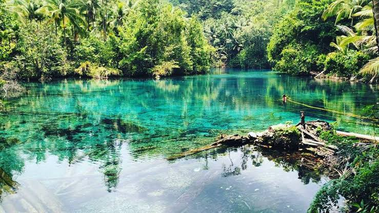

Destinasi lainnya
Danau Paisupok
Danau Paisupok, atau “Danau Cermin”, adalah danau alami tersembunyi di Desa Lukpanenteng, Kecamatan Bulagi Utara, Banggai Kepulauan, Sulawesi Tengah. Airnya sangat jernih—bagaikan kaca—yang memantulkan pepohonan dan langit di atasnya. Dikelilingi hutan lembap dan udara yang segar, Danau Paisupok menawarkan ketenangan sempurna jauh dari keramaian kota.

Lokasi
- Terletak sekitar 80 km dari Salakan (ibu kota Banggai Kepulauan), perjalanan memerlukan waktu sekitar 2–3 jam melalui darat dan trekking singkat saat mendekati area danau
Kejernihan & Fenomena Warna Air
- Airnya sangat jernih dan kadang tampak gelap kebiruan—sebuah fenomena visual karena pantulan pepohonan dan dasar danau yang dipenuhi tumbuhan serta batang pohon mati
 Fasilitas & Aktivitas
Fasilitas & Aktivitas
- Terdapat gazebo, dermaga, perahu dayung, fasilitas camping, toilet, dan warung. Pengunjung bisa berenang, snorkeling, menyusuri danau dengan perahu, berkemah, atau bersantai di gazebo
 Nilai Ekologis & Budaya
Nilai Ekologis & Budaya
- Danau ini menjadi habitat spesies endemik seperti Tarsius dan Burung Gagak Banggai. Nama “Paisupok” berasal dari bahasa lokal yang berarti air gelap, mencerminkan karakter visual dan emosional tempat ini